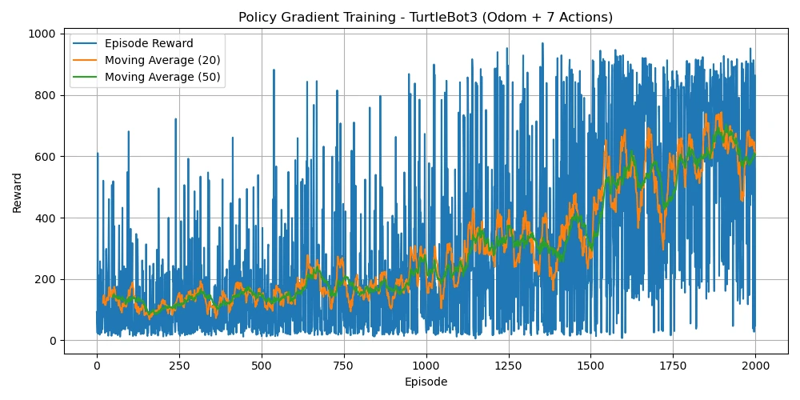
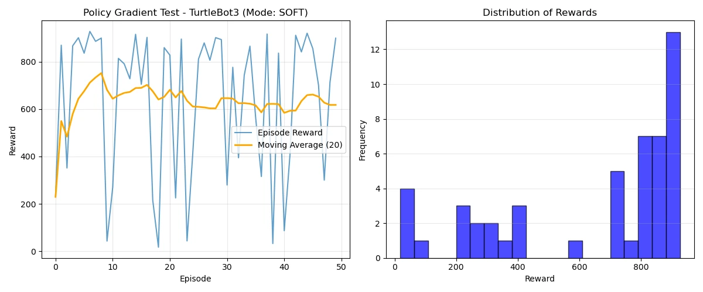
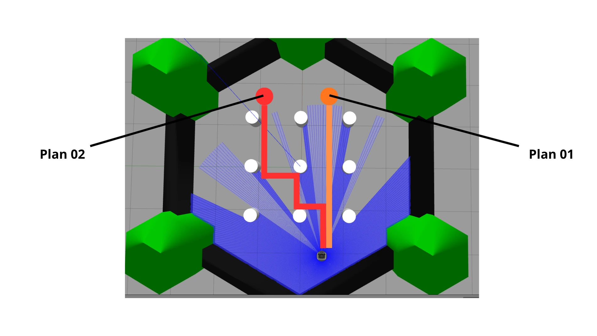
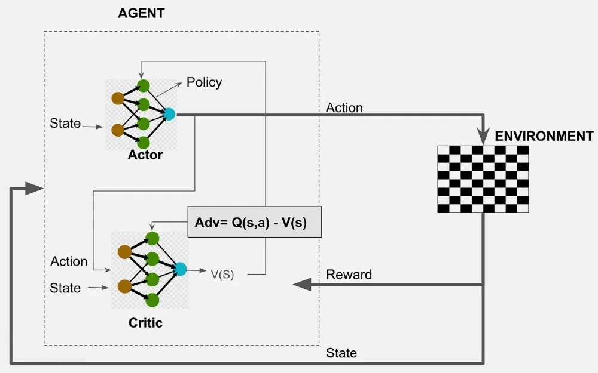
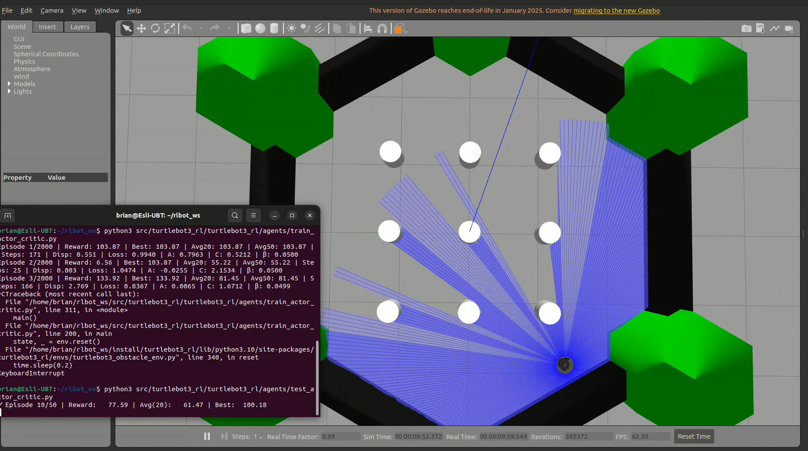

Observation space
A 20-dimensional vector: 16 minimum LiDAR distances from angular sectors, plus minimum and average frontal distances, total displacement and progress in the current step.
Two complementary parts of our TurtleBot3 work: a ROS 2 autonomous-delivery architecture based on Nav2 and a simulation framework comparing three reinforcement learning methods for navigation and obstacle avoidance. The detailed report below evaluates the RL algorithms; it does not establish that the delivery mission was optimized by those algorithms.

Two complementary parts of our TurtleBot3 work: a ROS 2 autonomous-delivery architecture based on Nav2 and a simulation framework comparing three reinforcement learning methods for navigation and obstacle avoidance. The detailed report below evaluates the RL algorithms; it does not establish that the delivery mission was optimized by those algorithms.
↗ Open the full RL report (PDF, 17 pages)A custom environment connects Gazebo simulation, ROS 2 and Gymnasium. The robot node acquires LiDAR and odometry, publishes motion commands and resets the simulated world between episodes.
A 20-dimensional vector: 16 minimum LiDAR distances from angular sectors, plus minimum and average frontal distances, total displacement and progress in the current step.
Seven discrete commands for Policy Gradient and Actor-Critic: fast/slow forward, turn left/right, forward-left/right and stop. The simple DQN experiment began with three actions.
The reward encourages progress, productive movements and free space ahead, while penalizing near obstacles, collisions, spinning in place and stuck behavior.
Stochastic policy with a 20 → 512 → 256 → 128 → 7 neural network, Adam (2×10⁻⁴), γ = 0.99, entropy regularization, successive reward-shaping refinements and moving-average-based early stopping.
Best overall result: 35 of 50 evaluation episodes were classified as “excellent” under the report’s criteria. Moving-average rewards increased during training.


The task was trained progressively: 400 episodes of simple navigation (three actions, ε-greedy), then a harder 800-episode task requiring passage through the central region.
In the simple task, reward stabilized around 150–170. In the complex task, the agent often learned circular motion to gain reward rather than follow the intended path.


Shared feature extractor 20 → 512 → 256 → 128 with two heads: an actor predicting action probabilities and a critic estimating state value. Trained using Adam, γ = 0.99 and entropy regularization.
The learned behavior was conservative and local; training reward averages remained roughly 50–80, without the improvement observed for Policy Gradient.


| Method | Observed outcome |
|---|---|
| Policy Gradient | Strongest overall navigation; 35/50 “excellent” evaluations |
| Deep Q-Network | Successful in simple task; reward exploit in extended task |
| Actor-Critic | Functional but conservative policy with limited map coverage |
Charts and figures extracted from the report by Victor Soares Mesquita and Esli Brian Silva Maciel. Interpret comparisons within each test setup; the DQN scenarios differ from the Policy Gradient and Actor-Critic scenarios.
A mission manager receives delivery requests, navigates to a designated zone and tracks mission states: WAITING → MOVING → DELIVERED → RETURNING. Nav2, SLAM/AMCL, RViz and Gazebo support navigation, localization and simulation. This is the complementary delivery part of the project, shown alongside the RL study.
Reward and observation design are as important as algorithm selection. High reward does not guarantee the intended path: the DQN circular behavior showed the need for an explicit goal. Policy Gradient gave the strongest observed navigation in this setup, not a generally proven global optimum.






Browse the figures; select a figure to view it larger.